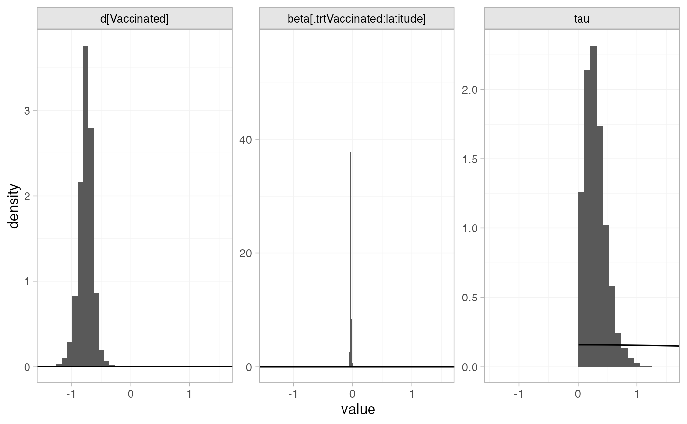

Example: BCG vaccine for tuberculosis
Source:vignettes/example_bcg_vaccine.Rmd
example_bcg_vaccine.Rmd
library(multinma)
options(mc.cores = parallel::detectCores())#> For execution on a local, multicore CPU with excess RAM we recommend calling
#> options(mc.cores = parallel::detectCores())
#>
#> Attaching package: 'multinma'
#> The following objects are masked from 'package:stats':
#>
#> dgamma, pgamma, qgammaThis vignette describes the analysis of 13 trials investigating BCG vaccination vs. no vaccination for prevention of Tuberculosis (TB) (Dias et al. 2011; Berkey et al. 1995). The data are available in this package as bcg_vaccine:
head(bcg_vaccine)
#> studyn trtn trtc latitude r n
#> 1 1 1 Unvaccinated 44 11 139
#> 2 1 2 Vaccinated 44 4 123
#> 3 2 1 Unvaccinated 55 29 303
#> 4 2 2 Vaccinated 55 6 306
#> 5 3 1 Unvaccinated 42 11 220
#> 6 3 2 Vaccinated 42 3 231Dias et al. (2011) used these data to demonstrate meta-regression models adjusting for the continuous covariate latitude, the absolute degrees latitude at which the study was conducted, which we recreate here.
Setting up the network
We have data giving the number diagnosed with TB during trial follow-up (r) out of the total (n) in each arm, so we use the function set_agd_arm() to set up the network. We set “unvaccinated” as the network reference treatment.
bcg_net <- set_agd_arm(bcg_vaccine,
study = studyn,
trt = trtc,
r = r,
n = n,
trt_ref = "Unvaccinated")
bcg_net
#> A network with 13 AgD studies (arm-based).
#>
#> ------------------------------------------------------- AgD studies (arm-based) ----
#> Study Treatments
#> 1 2: Unvaccinated | Vaccinated
#> 2 2: Unvaccinated | Vaccinated
#> 3 2: Unvaccinated | Vaccinated
#> 4 2: Unvaccinated | Vaccinated
#> 5 2: Unvaccinated | Vaccinated
#> 6 2: Unvaccinated | Vaccinated
#> 7 2: Unvaccinated | Vaccinated
#> 8 2: Unvaccinated | Vaccinated
#> 9 2: Unvaccinated | Vaccinated
#> 10 2: Unvaccinated | Vaccinated
#> ... plus 3 more studies
#>
#> Outcome type: count
#> ------------------------------------------------------------------------------------
#> Total number of treatments: 2
#> Total number of studies: 13
#> Reference treatment is: Unvaccinated
#> Network is connectedThe latitude variable in the bcg_vaccine data frame will automatically be available to use in a meta-regression model.
Meta-analysis models
We fit random effects (RE) models, firstly without any covariates, and then with a meta-regression on the continuous covariate latitude.
RE meta-analysis (no covariate)
We start by fitting a standard RE model without any covariates. We use \(\mathrm{N}(0, 100^2)\) prior distributions for the treatment effect \(d_\mathrm{Vaccine}\) and study-specific intercepts \(\mu_j\), and a \(\textrm{half-N}(0, 5^2)\) prior distribution for the heterogeneity standard deviation \(\tau\). We can examine the range of parameter values implied by these prior distributions with the summary() method:
summary(normal(scale = 100))
#> A Normal prior distribution: location = 0, scale = 100.
#> 50% of the prior density lies between -67.45 and 67.45.
#> 95% of the prior density lies between -196 and 196.
summary(half_normal(scale = 5))
#> A half-Normal prior distribution: location = 0, scale = 5.
#> 50% of the prior density lies between 0 and 3.37.
#> 95% of the prior density lies between 0 and 9.8.The model is fitted with the nma() function, with a random effects model specified by trt_effects = "random".
bcg_fit_unadj <- nma(bcg_net,
trt_effects = "random",
prior_intercept = normal(scale = 100),
prior_trt = normal(scale = 100),
prior_het = half_normal(scale = 5))Basic parameter summaries are given by the print() method:
bcg_fit_unadj
#> A random effects NMA with a binomial likelihood (logit link).
#> Inference for Stan model: binomial_1par.
#> 4 chains, each with iter=2000; warmup=1000; thin=1;
#> post-warmup draws per chain=1000, total post-warmup draws=4000.
#>
#> mean se_mean sd 2.5% 25% 50% 75% 97.5% n_eff Rhat
#> d[Vaccinated] -0.75 0.01 0.21 -1.17 -0.89 -0.75 -0.62 -0.34 1284 1
#> lp__ -13453.94 0.13 4.44 -13463.44 -13456.69 -13453.65 -13450.86 -13446.31 1168 1
#> tau 0.68 0.01 0.20 0.39 0.54 0.65 0.78 1.14 1408 1
#>
#> Samples were drawn using NUTS(diag_e) at Fri Dec 4 15:22:00 2020.
#> For each parameter, n_eff is a crude measure of effective sample size,
#> and Rhat is the potential scale reduction factor on split chains (at
#> convergence, Rhat=1).By default, summaries of the study-specific intercepts \(\mu_j\) and random effects \(\delta_j\) are hidden, but could be examined by changing the pars argument:
The prior and posterior distributions can be compared visually using the plot_prior_posterior() function:
plot_prior_posterior(bcg_fit_unadj, prior = c("trt", "het"))
RE meta-regression with covariate latitude
We now fit a RE meta-regression model, adjusting for latitude. We use \(\mathrm{N}(0, 100^2)\) prior distributions for the treatment effect \(d_\mathrm{Vaccine}\), study-specific intercepts \(\mu_j\), and regression coefficient \(\beta\). We use a \(\text{half-N}(0, 5^2)\) prior distribution for the heterogeneity standard deviation \(\tau\). We can examine the range of parameter values implied by these prior distributions with the summary() method:
summary(normal(scale = 100))
#> A Normal prior distribution: location = 0, scale = 100.
#> 50% of the prior density lies between -67.45 and 67.45.
#> 95% of the prior density lies between -196 and 196.
summary(half_normal(scale = 5))
#> A half-Normal prior distribution: location = 0, scale = 5.
#> 50% of the prior density lies between 0 and 3.37.
#> 95% of the prior density lies between 0 and 9.8.Again, the model is fitted with the nma() function. The regression formula ~ .trt:latitude means that the interaction of latitude with treatment will be included; the .trt special variable indicates treatment, and latitude is in the original data set. We increase adapt_delta to 0.99 to remove a small number of divergent transition errors (the default for RE models is set to 0.95).
bcg_fit_lat <- nma(bcg_net,
trt_effects = "random",
regression = ~.trt:latitude,
prior_intercept = normal(scale = 100),
prior_trt = normal(scale = 100),
prior_reg = normal(scale = 100),
prior_het = half_normal(scale = 5),
adapt_delta = 0.99)#> Note: No treatment classes specified in network, any interactions in `regression` formula will be separate (independent) for each treatment.
#> Use set_*() argument `trt_class` and nma() argument `class_interactions` to change this.Basic parameter summaries are given by the print() method:
bcg_fit_lat
#> A random effects NMA with a binomial likelihood (logit link).
#> Regression model: ~.trt:latitude.
#> Centred covariates at the following overall mean values:
#> latitude
#> 33.46154
#> Inference for Stan model: binomial_1par.
#> 4 chains, each with iter=2000; warmup=1000; thin=1;
#> post-warmup draws per chain=1000, total post-warmup draws=4000.
#>
#> mean se_mean sd 2.5% 25% 50% 75%
#> beta[.trtVaccinated:latitude] -0.03 0.00 0.01 -0.05 -0.04 -0.03 -0.03
#> d[Vaccinated] -0.76 0.00 0.12 -1.02 -0.83 -0.75 -0.69
#> lp__ -13457.10 0.18 5.08 -13467.75 -13460.31 -13456.75 -13453.42
#> tau 0.30 0.01 0.18 0.03 0.16 0.27 0.40
#> 97.5% n_eff Rhat
#> beta[.trtVaccinated:latitude] -0.02 2004 1
#> d[Vaccinated] -0.52 1801 1
#> lp__ -13448.20 767 1
#> tau 0.74 816 1
#>
#> Samples were drawn using NUTS(diag_e) at Fri Dec 4 15:22:09 2020.
#> For each parameter, n_eff is a crude measure of effective sample size,
#> and Rhat is the potential scale reduction factor on split chains (at
#> convergence, Rhat=1).Note that latitude has automatically been centered at 33.46, the mean value for the studies in the network.
By default, summaries of the study-specific intercepts \(\mu_j\) and study-specific relative effects \(\delta_{jk}\) are hidden, but could be examined by changing the pars argument:
The prior and posterior distributions can be compared visually using the plot_prior_posterior() function:
plot_prior_posterior(bcg_fit_lat, prior = c("trt", "reg", "het"))
Model fit and comparison
Model fit can be checked using the dic() function:
(bcg_dic_unadj <- dic(bcg_fit_unadj))
#> Residual deviance: 26 (on 26 data points)
#> pD: 23.5
#> DIC: 49.5
(bcg_dic_lat <- dic(bcg_fit_lat))
#> Residual deviance: 30.4 (on 26 data points)
#> pD: 21.2
#> DIC: 51.6The DIC is very similar between the two models, so we might at first choose the unadjusted model. The posterior mean residual deviance is larger for the model with the covariate, but this model also has a lower effective number of parameters \(p_D\) so is allowing for more shrinkage of the random treatment effects. Moreover, the model with the covariate has a much lower estimated heterogeneity standard deviation:
summary(bcg_fit_unadj, pars = "tau")
#> mean sd 2.5% 25% 50% 75% 97.5% Bulk_ESS Tail_ESS Rhat
#> tau 0.68 0.2 0.39 0.54 0.65 0.78 1.14 1417 2113 1
summary(bcg_fit_lat, pars = "tau")
#> mean sd 2.5% 25% 50% 75% 97.5% Bulk_ESS Tail_ESS Rhat
#> tau 0.3 0.18 0.03 0.16 0.27 0.4 0.74 755 1246 1Adjusting for latitude is explaining a substantial amount of heterogeneity in the data. The 95% Credible Interval for the regression coefficient also excludes zero:
summary(bcg_fit_lat, pars = "beta")
#> mean sd 2.5% 25% 50% 75% 97.5% Bulk_ESS Tail_ESS Rhat
#> beta[.trtVaccinated:latitude] -0.03 0.01 -0.05 -0.04 -0.03 -0.03 -0.02 2059 2260 1
plot(bcg_fit_lat,
pars = "beta",
ref_line = 0,
stat = "halfeye")Altogether, we might prefer the model with the adjustment for latitude. When considering covariates in random effects models it is important not to just look at the DIC (Dias et al. 2011). We should also consider any reductions in heterogeneity, and the estimated regression coefficients and their standard error. The DIC is not sensitive to changes in the heterogeneity, as RE models are very flexible and can fit the data well whatever the level of heterogeneity.
Further results
We can produce estimates of the relative effect of vaccination at any latitude using the relative_effects() function. The newdata argument specifies a data frame containing the values of the covariate latitude that we are interested in, and the study argument is used to specify a column of newdata for an informative label.
bcg_releff_lat <- relative_effects(bcg_fit_lat,
newdata = tibble::tibble(latitude = seq(10, 50, by = 10),
label = paste0(latitude, "\u00B0 latitude")),
study = label)
bcg_releff_lat
#> ----------------------------------------------------------- Study: 10° latitude ----
#>
#> Covariate values:
#> latitude
#> 10
#>
#> mean sd 2.5% 25% 50% 75% 97.5% Bulk_ESS Tail_ESS Rhat
#> d[10° latitude: Vaccinated] -0.02 0.21 -0.49 -0.13 0 0.1 0.39 2106 2085 1
#>
#> ----------------------------------------------------------- Study: 20° latitude ----
#>
#> Covariate values:
#> latitude
#> 20
#>
#> mean sd 2.5% 25% 50% 75% 97.5% Bulk_ESS Tail_ESS Rhat
#> d[20° latitude: Vaccinated] -0.33 0.16 -0.67 -0.42 -0.32 -0.25 -0.04 2119 1945 1
#>
#> ----------------------------------------------------------- Study: 30° latitude ----
#>
#> Covariate values:
#> latitude
#> 30
#>
#> mean sd 2.5% 25% 50% 75% 97.5% Bulk_ESS Tail_ESS Rhat
#> d[30° latitude: Vaccinated] -0.65 0.12 -0.91 -0.72 -0.64 -0.58 -0.41 2066 1826 1
#>
#> ----------------------------------------------------------- Study: 40° latitude ----
#>
#> Covariate values:
#> latitude
#> 40
#>
#> mean sd 2.5% 25% 50% 75% 97.5% Bulk_ESS Tail_ESS Rhat
#> d[40° latitude: Vaccinated] -0.97 0.14 -1.25 -1.05 -0.96 -0.89 -0.69 1793 1868 1
#>
#> ----------------------------------------------------------- Study: 50° latitude ----
#>
#> Covariate values:
#> latitude
#> 50
#>
#> mean sd 2.5% 25% 50% 75% 97.5% Bulk_ESS Tail_ESS Rhat
#> d[50° latitude: Vaccinated] -1.28 0.18 -1.66 -1.39 -1.28 -1.18 -0.91 1766 2190 1The plot() method may be used to visually compare these estimates:
plot(bcg_releff_lat,
ref_line = 0)
A more sophisticated plot shows the regression line and confidence band for the effect of latitude, overlaid on the observed log odds ratios in each study:
library(dplyr)
#>
#> Attaching package: 'dplyr'
#> The following objects are masked from 'package:stats':
#>
#> filter, lag
#> The following objects are masked from 'package:base':
#>
#> intersect, setdiff, setequal, union
library(ggplot2)
# Get data for regression line
lat_range <- range(bcg_vaccine$latitude)
lat_dat <- tibble(latitude = seq(lat_range[1], lat_range[2], by = 1))
bcg_lat_reg <- relative_effects(bcg_fit_lat,
newdata = lat_dat) %>%
as_tibble() %>%
bind_cols(lat_dat)
# Get study log odds ratios
bcg_lor <- bcg_vaccine %>%
group_by(studyn) %>%
mutate(lor = log(r / (n - r)) - log(first(r) / (first(n) - first(r))),
sample_size = sum(n)) %>%
slice(-1)
# Plot
ggplot(aes(x = latitude), data = bcg_lor) +
geom_hline(yintercept = 0, colour = "grey60") +
geom_ribbon(aes(ymin = `2.5%`, ymax = `97.5%`), data = bcg_lat_reg,
fill = "darkred", alpha = 0.3) +
geom_line(aes(y = mean), data = bcg_lat_reg,
colour = "darkred") +
geom_point(aes(y = lor, size = sample_size), alpha = 0.6) +
coord_cartesian(xlim = c(0, 60)) +
xlab("Degrees Latitude") + ylab("log Odds Ratio") +
scale_size("Sample Size") +
theme_multinma()
References
Berkey, C. S., D. C. Hoaglin, F. Mosteller, and G. A. Colditz. 1995. “A Random-Effects Regression Model for Meta-Analysis.” Statistics in Medicine 14 (4): 395–411. https://doi.org/10.1002/sim.4780140406.
Dias, S., A. J. Sutton, N. J. Welton, and A. E. Ades. 2011. “NICE DSU Technical Support Document 3: Heterogeneity: Subgroups, Meta-Regression, Bias and Bias-Adjustment.” National Institute for Health and Care Excellence. http://nicedsu.org.uk/.